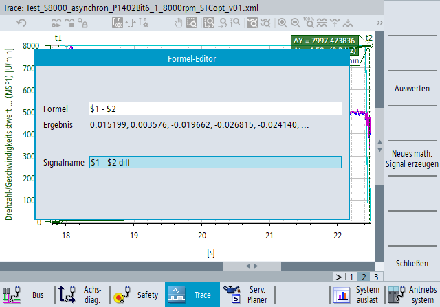

| Hinweis |
|
Für die Nutzung dieser Funktion ist eine Expert-Trace-Lizenz erforderlich, siehe "Expert-Trace-Funktionen". |
Auf die Messdaten können mathematische Ausdrücke angewendet werden. Diese Funktionalität ist über das Symbol "Mathematische Operationen" in der Symbolleiste verfügbar. Wenn Sie auf das Symbol klicken, wird ein Formeleditor geöffnet.
Sie können mathematische Ausdrücke definieren und auswerten. Wenn das Ergebnis eines mathematischen Ausdrucks ein neues Signal ist, können Sie es als Kurvendarstellung anzeigen. Wenn das Ergebnis ein einzelner Wert ist, wird der Wert im Formeleditor angezeigt.
Die maximale Anzahl von Signalen in der Trace-Konfiguration (aufgezeichnete und mathematische) darf 32 nicht überschreiten.
Auf die Messdaten eines Signals kann über das Zeichen '$' und den numerischen Identifikator des Signals zugegriffen werden. Dieser Identifikator ist in der zweiten Spalte (#) der Signaltabelle zu finden. Beispiel:
Syntax für den Zugriff auf das Signal mit #ID 1: $1
Syntax für den Zugriff auf das Signal mit #ID 14: $14
Geben Sie die Signalformel ein und klicken Sie auf den Softkey "Auswerten". Das Ergebnisfeld zeigt die ersten fünf berechneten Werte.
Geben Sie einen Bezeichner für das neue Signal ein. Wenn das Bezeichnerfeld zuvor leer war, wird die Formel automatisch in das Feld kopiert. Andernfalls wird der vorherige Name beibehalten. (Änderungen an der Formel bewirken keine Änderungen im Bezeichnerfeld).
Klicken Sie auf den Softkey "Neues mathematisches Signal generieren". Der Softkey ist nur aktiv, wenn die Auswertung erfolgreich war und das Bezeichnerfeld nicht leer ist.
Das neue mathematische Signal wird zur Trace-Konfiguration hinzugefügt und im Trace-Diagramm angezeigt. Das Adressfeld in der Signaltabelle zeigt die Formel und das Bezeichnerfeld zeigt den Signalnamen, den Sie im Editorfenster eingegeben haben.
Sonderfälle, wenn eine Trace-Konfiguration mathematische Signale enthält:
Wenn eine neue Trace-Aufzeichnung gestartet wird, werden die mathematischen Signale automatisch neu berechnet, nachdem die Aufzeichnung gestoppt wurde.
Mathematische Signale können der Trace-Konfiguration auch im Kompatibilitätsmodus hinzugefügt werden, wenn die Konfiguration ansonsten nicht bearbeitbar ist.
Mathematische Signale können genau wie reale Signale in der Sitzungsdatei gespeichert und wieder geladen werden. Es wird jedoch nur die Formel in der Datei gespeichert. Die Daten werden nicht gespeichert, da sie neu berechnet werden, wenn die Sitzungsdatei geladen wird.
Wenn Sie auf ein Papierkorbsymbol in der Signaltabelle klicken, um ein Signal zu löschen, und dieses Signal in der Formel eines oder mehrerer mathematischer Signale verwendet wird, weist eine Warnmeldung darauf hin, dass die mathematischen Signale, die auf diesem Signal basieren, ebenfalls aus der Konfiguration gelöscht werden. Sie können die Löschung bestätigen oder abbrechen.
Wenn Sie einen Parameter einer Variablen (z. B. Achse, Kanal oder Indizes) ändern, werden die Messdaten dieses Signals gelöscht. Wenn ein mathematisches Signal auf diesem realen Signal basiert, werden die berechneten Signaldaten ebenfalls gelöscht, die Formel des mathematischen Signals bleibt jedoch in der Trace-Konfiguration erhalten.
Wenn die Messdaten in CSV-Dateien exportiert werden, werden die mathematischen Signale nicht exportiert.
MIN($1) | Minimalwert des Signals abrufen |
MAX($1) | Maximalwert des Signals abrufen |
AM($1) | Arithmetischen Mittelwert des Signals abrufen |
EFFECTIV($1) | Quadratischen Mittelwert des Signals abrufen |
AV($1, 3) | Den gleitenden Mittelwert des Signals berechnen. Das zweite Argument der Funktion definiert die Anzahl der Datenpunkte für die Berechnung des Mittelwerts und muss zwischen 3 und 99 liegen. |
LSM($1) | Mit der Methode der kleinsten Quadrate die beste Anpassungslinie über die Datenpunkte des Signals finden. |
LSME($1) | Mit der Methode der kleinsten Quadrate die beste Anpassungslinie über die Datenpunkte des Signals finden und den verbleibenden Fehler als Signal zurückgeben: $1-LSM($1) |
REC($1) | Den Kehrwert jedes Datenpunkts des Signals berechnen. Wenn der Signalwert 0 ist, ist auch der berechnete Wert 0. |
ABS($1) | Den Absolutwert jedes Datenpunkts des Signals berechnen. |
SQR($1) | Das Quadrat jedes Datenpunkts des Signals berechnen. |
SQRT($1) | Die Quadratwurzel jedes Datenpunkts des Signals berechnen. Wenn der Signalwert negativ ist, ist der berechnete Wert 0. |
DIF($1) | Die erste Ableitung des Signals berechnen. |
DIF2($1) | Die zweite Ableitung des Signals berechnen. |
INT($1) | Das Integral des Signals berechnen. |
DEMOD($1) | Die Transitionen 359 -> 0 der Datenpunkte durch die Transitionen 359 -> 360 ersetzen. Wenn zum Beispiel die ursprünglichen Signalwerte [..., 357.1, 358.4, 0.4, 2.0, ..., 358.0, 359.6, 1.2, ...] sind, ist das Ergebnis von DEMOD($1) [..., 357.1, 358.4, 360.4, 362.0, ..., 718.0, 719.6, 721.2, ...]. |
Folgende Operatoren werden unterstützt: +, -, *, /, <, <=, >, >=, ==, (, ), !=
Der unäre Minus-Operator wird ebenfalls unterstützt (z. B. 2 + -5), nicht aber der unäre Plus-Operator.
Jeder mathematische Ausdruck kann verschiedene Operatoren und mehrere Funktionsaufrufe enthalten.
5.4 zu jedem Datenpunkt des Signals addieren | $1 + 5.4 |
Die Differenz zwischen zwei Signalen anzeigen (z. B. Istwert - Zielwert) | $1-$2 |
Den Absolutwert der Differenz zwischen zwei Signalen anzeigen | ABS($1-$2) |
Die maximale Differenz zwischen zwei Signalen finden | MAX(ABS($1-$2)) |
Prüfen, ob die maximale Differenz unter 2.1 liegt | MAX(ABS($1-$2)) < 2.1 |
Die Differenz zur Anpassungslinie der Methode der kleinsten Quadrate anzeigen | ABS($1 - LSM($1)) |